CODES / fit / kriging
Train a Kriging
Contents
Syntax
- kr=CODES.fit.kriging(x,y) builds a kriging based on the training set (x,y).
- kr=CODES.fit.kriging(...,param,value) uses a list of parameters param and values value (c.f., parameter table).
Description
For a training set 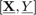 made of pairs 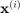 and 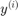 such that:

and a mean function 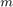 and an auto-correlation function  , the covariance function is defined as:
, the covariance function is defined as:
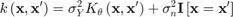
where 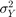 is the Kriging variance and 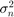 is the inherent variance, also referred to as nugget or observation variance.
The training covaraince matrix and mean matrix are defined as:
![$$\Sigma_{tr}=\left[\begin{array}{ccc}k\left(\mathbf{x}^{(1)},\mathbf{x}^{(1)}\right) & \dots & k\left(\mathbf{x}^{(1)},\mathbf{x}^{(n)}\right)\\\vdots & \ddots & \vdots\\k\left(\mathbf{x}^{(n)},\mathbf{x}^{(1)}\right) & \dots & k\left(\mathbf{x}^{(n)},\mathbf{x}^{(n)}\right)\end{array}\right]$$](kriging_eq08887554802893771971.png)
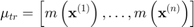
The Kriging prediction and prediction standard error are defined as:
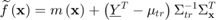
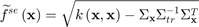
Correlation functions
One covariance function is available:
- Gaussian:
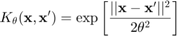
Mean Functions
One mean function is available:
- 0 order polynomial:
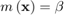
Solvers
Two solvers are available:
- 'CODES': An implementation from scratch.
- 'DACE' Uses the DACE Toolbox with minor numerical improvement in the prediction.
Training Options
| param | value | Description |
|---|---|---|
| 'scale' | {'square'}, 'circle', 'none' | Define scaling method for the inputs (c.f., Scaling for details). |
| 'UseParallel' | logical, {false} | Switch to use parallel settings. |
| 'theta' | numeric, { [ ] } | Value for kernel parameter. If [ ], should be calibrated. |
| 'delta_2' | numeric, {0} | Only if 'regression' set to true. Value for “nugget” parameter. If left to default, should be calibrated. |
| 'mean_fun' | {'poly0'} | Mean value function, see Mean functions. |
| 'cov_fun' | {'corr'} | Correlation function (also referred to as kernel or auto-correlation function), see Correlation functions. |
| 'scale_y' | {'square'}, 'circle', 'none' | Define scaling method for the ouputs (c.f., Scaling (meta) for details) |
| 'solver' | {'CODES'} or 'DACE' | Type of solver to use to train the Kriging, see Solvers. |
| 'regression' | logical {false} | Whether regression kriging should be used. This is achieved by adding a “nugget” 'delta_2' on the diagonal of the correlation matrix, see Description. |
| 'display' | logical {true} | Wether information should be displayed. For now, only display warning if correlation matrix needs to be conditioned (further than 'delta_2'). |
| 'theta_min' | numeric, { [ ] } | Only if 'solver' set to 'DACE'. Lower bound for the 'theta' search. |
| 'theta_max' | numeric, { [ ] } | Only if 'solver' set to 'DACE'. Upper bound for the 'theta' search. |
Evaluation and Post-Processing
| Capabilities of a Kriging object. |
Mini tutorial
| A mini tutorial of the capabilities of the Kriging class. |
References
Copyright © 2015 Computational Optimal Design of Engineering Systems (CODES) Laboratory. University of Arizona.
|
|
Computational Optimal Design of Engineering Systems |

|